|
|
Kvastmakarbacken 2
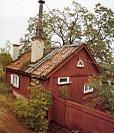

|
|
Kvastmakarbacken
Tomten uppläts som ofri 1754 till varvstimmermannen Carsten Söderberg, som begärt att »få intaga och hägna en liten bergaktig
ödesplats på Södermalm vid continuation av Bondegatan uti kvarteret Tegelviken belägen«. Årligt tomtöre föreslogs av
stadsingenjören till 12 öre silvermynt »för dess avlägsenhet och idel bergaktighet skull«, men bestämdes av magistraten till 1 daler
silvermynt.
Bebyggelsen berörs första gången någorlunda utförligt i bouppteckning 1802 efter timmermannen Eric Björkmans hustru
Brita Pehrsdotter. Den omtalas här som en gammal oförsäkrad gård, långt bort belägen och bofällig. Den upptages därför endast
till ett värde av 50 riksdaler.
|
|
|
Av ägarlängderna framgår att det är anställda vid Tjärhovet och senare vid Stora varvet vid Tegelviken som ägt fastigheten.
Där finns först tunnbindare och tjärkullrare, därefter timmergesäller och timmermän och stångjärnsbärare. År 1846 inträder
betjänten Carl Blomqvist i ägarlängden. Blomqvist och senare hans efterlämnade släktingar står sedan som ägare under ett par
årtionden.
Fastigheten består av ett timrat boningshus om ett rum och kök, ett mindre gårdshus under pulpettak innehållande två mindre
rum samt två smärre uthus. Husen hör till de i ursprungligt skick bäst bevarade på Åsöberget, och ger en uppfattning om hur den
övriga bebyggelsen såg ut före upprustningen på 1950-och 1960-talet.
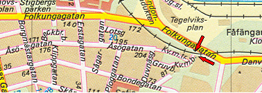
|
|
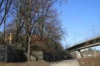
2004. Folkungagatan västerut in mot Södermalm. Trappan till Kvastmakarbacken till vänster.
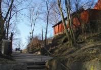
2004. Trappan upp till Kvastmakarbacken.
|
|
Ur Malmgårdarna i Stockholm, Birgit Lindberg, 1985
Hedbergs malmgård
|
Vid Kvastmakarbacken 3 i en liten trädgård ligger ett falurött,
nyreparerat trähus med farstukvist och bjälkkällare, alltsammans inhägnat av syrenhäckar och plank.
Det är drömmen om gården mitt i den brusande storstaden.
Från 1794 har vi en brandförsäkring som visar gårdens omfattning, 6 720 m2. Allt detta fick vara kvar
till 1950-talet, då alla byggnader utom boningshuset revs. Även större delen av trädgården schaktades
bort. Numera finns bara kvar en smal slänt österut och på södra sidan en hög lodrät stenmur med en
smal grässtrimma nedanför.
|
|
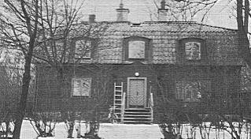
|
|
|
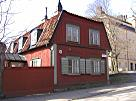
2004
|
|
Malmgården har gått igenom många ägarehänder. Barn och arvingar till den förste
innehavaren, faktor Hans Westman, sålde egendomen år 1721 till Daniel Hedberg, vars
namn gården har behållit. Av efterlämnade papper kan man utläsa att huset byggdes någon
gång mellan åren 1711 och 1726.
Gården stannade inom den Hedbergska släkten ända till år 1787, då den såldes på offentlig
auktion. Köpare var mjölnareänkan Sarah Wennberg. Hon tycks ha avlidit kort därefter,
ty
redan år 1790 var malmgården skriven på hennes arvingar. Samma år friköptes egendomen och
såldes till garvareåldermannen Carl Diurberg. Han köpte fastigheten av avlidne mjölnaren
Anders Wennbergs omyndiga barns förmyndare. Vad som timat här inom loppet av tre år får
man gissa sig till.
|
|
|
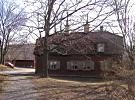
2004
|
|
Efter garvareåldermannen
tog hans änka över och sedan de tre döttrarna Lovisa Ulrika, Anna Elisabet och Margareta
Sophia. Först år 1849 var den Diurbergska eran slut. Köpare var denna gång trädgårdsmästare
A Österberg och efter honom och hans änka kom år 1880 ytterligare en trädgårdsmästare, C W
Eriksson.
År 1900 köpte Stockholms stad malmgården, men fortfarande brukades den av
trädgårdsmästare - Kållberg och Öhman.
Fru Ragnhild Andersson, som sedan år 1912 bott på Kvastmakarbacken 6, minns
utvecklingen här ute vid Danvikstullen. Hon var bara fyra år när hon med föräldrar och
syskon flyttade hit. Tvärs över vägen inne på malmgården hade hon nära släkt. Precis som de
andra barnen runt Fåfängan hade de rena landet med skog och berg
för sina lekar. Så småningom blev här ett koloniområde med vackra lusthus och en dansbana,
tills 1950 den stora förändringen skedde. Man schaktade då och byggde för spårvägshallarna,
och Lilla Ringvägen försvann och blev Bondegatans slut.
Nu år 1984 flyttar åter nya innevånare in i malmgården men inga brukare av jorden, endast boende.
|
|
|
Kvastmakarbacken 6
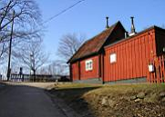
2004. Kvastmakarbacken 6, sedd från nr 4 norrifrån.
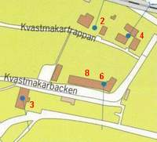
|
|
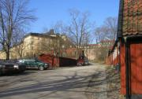
2004. Kvastmakarbacken västerut. Till höger nr 6 och 8, till vänster nr 3.
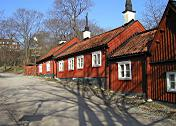
2004. Kvastmakarbacken västerut. Till höger nr 6 och 8.
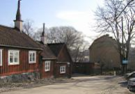
2004. Kvastmakarbacken österut. Till vänster nr 8 och 6.
|
När denna tomt ursprungligen uppläts som ofri är inte känt. År 1726 utfördes uppmätning av stadsingenjören för brevdragaren
Erich Wettersten och hans hustru. Årliga tomtöret var satt till 30 öre silvermynt.
Äldsta vittnesbördet om bebyggelsen och dess omfattning återfinns i brandförsäkring av år 1752 tecknad av Gabriel Brandström.
Beståndet utgörs då av tre bostadshus, varav två med vardera ett rum och biutrymme och ett med tre rum, förstuga och
bjälkkällare samt ett uthus (vedbod).
I den därnäst följande försäkringen av år 1799, tecknad av nyvordne ägaren Pehr Malmqvist, framgår att bebyggelsen
förkovrats medelst »nya eldstäder överallt, plank, panelningar, tegeltaks påläggande m.m.«. Försäkringarna från 1863 och 1901 är i
stort sett lika den från 1799.
|
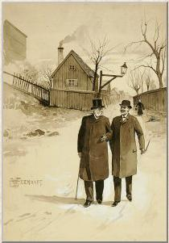
Kvastmakarbacken 8 (?). Lavering, Wilhelm Gernandt 1900-09
|
|
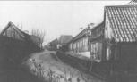
Kvastmakarbacken västerut. På höger sida nr 6 närmast och nr 12 längst bort. På vänster sida nr 3. 1890-talet.
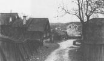
Kvastmakarbacken österut. På höger sida nr 3. På vänster sida nr 8 och 6. Längst ned nr 1, Gröna Gården. 1906
|
|
|
|
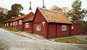
Kvastmakarbacken västerut upp mot
f d Trädgårdsgränd. Nr 6 och 8.
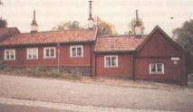
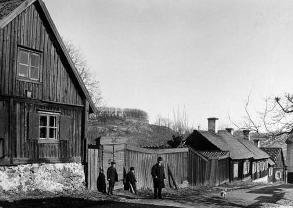
Kvastmakarbacken österut från Trädgårdsgränd. Nr 8 och 6 på
vänster sida till höger i bild. Fåfängan i bakgrunden. 1892
De fyra idag befintliga »träkåkarna« torde ha uppförts före 1752, antagligen före 1736, då det blev förbjudet att bygga nya trähus i
Stockholm.
Ägarlängden för fastigheten visar att husen har bebotts av innehavare med bättre ställning än flertalet andra på Åsöberget.
De har dessutom haft sin utkomst från andra verksamheter än varvet vid Tegelviken.
Således har här funnits - förutom första ägaren brevdragaren Erich Wettersten - en snustillverkare, en kattunsarbe-
tare,
klädesfabrikörer, en kunglig sekreterare, överskärare, bryggare och svarvare.
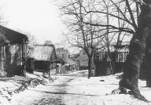
1907. Planken är borta.
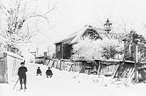
Kvastmarakbacken västerut. Nr 10 till höger. 1906
|
|
|
Kvastmakarbacken 10
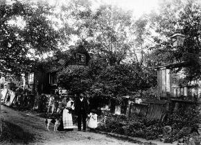
Kvastmakarbacken 10 västerut från hörnet av Trädgårdsgränd.
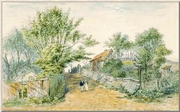
Kvastmakarbacken 10 västerut från hörnet av Trädgårdsgränd. Till vänster nr 5. Akvarell Fritz Ahlgrensson. 1891
|
|
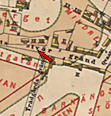
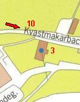
|
|
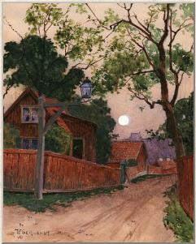
Kvastmakarbacken 10 österutut mot hörnet av Trädgårdsgränd. Akvarell, Wilhelm Gernandt, 1900-1910
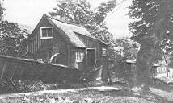
|
|
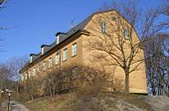
|
Gröna Gården
Förändringarna på Stora Varvet (omkr 1860) gav sig till känna även på Åsöberget. Tjugoen timmermän fanns fortfarande i de små
stugorna, men trettio år tidigare hade det varit dubbelt så många, och av de tjugoen familjeförsörjarna var
sex änkor. Många timmermän hade lämnat plats åt järnarbetare, smeder, smedgesäller, smedlärlingar och
smedhantlangare, plåtslagare, kopparslagare, filare, snickare, varvets nattvakter, skeppsbyggnadselever och
mekaniska elever. Det började bli trångt på berget. Även om man trängde ihop sig, förslog utrymmet bara till en bråkdel av den stora arbetsstyrkan, som fördubblats två gånger på trettio år.
|
|
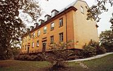
|
|
|
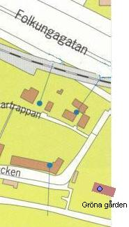
|
|
Två hyreshus hade kort förut uppförts vid Tjärhovsgatan mittemot varvet. Det ena, den så kallade
Gröna gården, som finns kvar än i dag på den grönskande tomten närmast Tegelviksgatan hade
byggts av Arbetarbostadsfonden och ägdes av Fattigvårdsnämnden. Gröna gården var på sitt sätt en
föregångare till vår tids kollektivhus.
Där fanns bland annat
gemensam bagarestuga som eldades upp
en gång i veckan för alla familjerna. Varje lägenhet bestod av ett stort rum och kök. I köken var de
öppna spisarna kvar ännu vid 1900-talets början; så länge var man nödsakad att laga sin mat i
trefotsgrytor över bar eld. År 1865 bodde bara sex av Lindbergs arbetare i Gröna
Gården, men det
berodde inte på att man ansåg att huset erbjöd för liten komfort och för små utrymmen, snarare på
motsatsen. Ett stort rum och kök låg nog i överkant av vad en arbetare hade råd till. En blick på
husets övriga hyresgäster bekräftar detta. I detta Fattigvårdsnämndens hus, som uppförts för medel som insamlats »till minne av Hans Kungl. Maj:ts lyckliga återställande till hälsan», fanns en sidenfabriksmästareänka, två tulluppsyningsmän, en före detta
taffeltäckare och en extra ordinarie hamnfogde.
|
|
|

{kind=link}
{kind=link}
{kind=link}
{kind=link}
{kind=link}